Projects
Behavioral Coupling of EEG & Touchscreen Operant Task
Prototyped non-shielding acrylic platforms and TTL integration to pair wireless EEG telemetry with Bussey-Saksida touchscreen chambers.
Event-Related Potentials Analysis Pipeline
Robust Python pipeline for extracting AEPs and VEPs from rodent EEG recordings
DIY EEG & Brain-Computer Interface
Homemade RC-circuit EEG passion project with a 4-stage Python BCI pipeline spanning from analog signal acquisition through real-time motor imagery decoding built for under $100.
EEG-Touchscreen Operant Coupling
Overcoming historical hurdles for implementing wireless EEG behavioral assays in a touchscreen learning task. I prototyped non-shielding platforms, identified ideal wiring layouts, and established directions for near-future experimental plans.
Problem Items
- Shielding: Metal ABET II chambers blocked wireless EEG signal transmission entirely.
- Digital IO: Required additional PCI card configuration for real-time digital output.
- Wiring: Routing digital output lines from PCI card to DSI EEG system.
Solutions
- Shielding: Replaced metal platforms with CNC-machined acrylic parts I designed in SolidWorks. Assembled with Acrylic Weld On solvent bonding.


- Digital IO: Set custom TTL pulse counts that encoded for animal behavioral performance during the task - 3 pulses for correct, 4 for incorrect, 5 for reward collection.

- Wiring: Stripped BNC coaxial wire and routed signal/ground to breakbox channel that connected to our DSI telemer system via a BNC-in cable.


Decoding & Analysis Pipeline
The touchscreen chamber writes no event markers into the EDF. Every behavioral event instead arrives as a burst of TTL pulses on an analog channel recorded alongside the EEG, where the event's identity is the pair of pulse width and pulse count. decode_ts_channel reverses that in four steps: threshold at 4 V into a binary trace, discard pulses under 20 ms as electrical noise rather than TTL, then look up each (width, count) pair in a per-stage event dictionary with six events for punish incorrect and ten for discrimination (including correct trial specific event encoders). Reversal learning reuses the discrimination dictionary and analysis scripts since only the rewarded image changes and the databases accomodate the paradigm shift in data storage location. Decoding runs before filtering so the band-pass can't smear the pulse edges, and the channel is then retyped as a stim channel so its multi-volt swings don't trip amplitude rejection as the EEG channel and 'TS' channel operate at different voltage scales (uV and V).
Epochs are cut around each event occurrence using per-event windows that are baseline corrected against the pre-event window and rejected at 500 uV peak-to-peak. The decoded sequence is separately walked to rebuild each trial as image onset to touch to reward, which supplies the touch and reward latencies and lets a labeling pass tag each trial with its own and the preceding trial's outcome to build the post-error 2x2 condition, counting only free trials as predecessors so correction trials never stand in as the previous trial.
There are three analysis stages with different metrics of investigation:
- Per-session and grand mean (subject): evoked waveforms, peaks taken as the most prominent local extremum in a-priori evoked waveform components (very ERP-esque) as well as Morlet ERSP and ITPC. Grand means use a hierarchical bootstrap that resamples subjects and then trials within subject.
- Longitudinal (across sessions): per-subject OLS slopes, mixed models over session index, cluster permutation on the change waveform and time-frequency map, and coupling to behavioral metrics (animal performance in touchscreen task) as derived from the 'TS' channel.
- Trial level (trial): per-trial peak, mean amplitude, and band power in dB, modeled with a per-subject random slope first or a fall back to random intercept and then pooled OLS, with the fallback recorded in the output so it can't be mistaken for a proper mixed fit. ITPC has no trial-level counterpart, as it is a resultant vector length across trials and no per-trial value exists.
Results are assembled in metrics_long.csv aggregated to session means, trials_long.csv left at one row per kept epoch. Keeping the second unaggregated is what makes the trial as N analysis possible since measuring peaks on trial-averaged evokeds per session leaves no per-trial value anywhere downstream.
Analysis & Results
Across three task stages (a punish incorrect control and reminder stage, a discrimination stage for task learning, and a reversal of learning stage) totaling more than 50,000 trials in up to seven mice over a 2 month span of 5-6 sessions/week, I modeled single-trial EEG features with mixed-effects regression, treating each trial as an observation while accounting for animal identity. Right around the moment when the mouse chose between the correct and incorrect image (+/- 1 second), alpha power was consistenty lower on error trials compared to correct ones by roughly 4 dB across both learning stages (q<0.001) and in the same direction in every animal. The same pattern held in the beta and gamma frequency bands, though not in the theta band. The animal's performance and behaviors relating to learning were apparent when sorting on trial performance, with errors having a lower latency than correct responses and slower, more deliberate choices predicted being correct.
Lower alpha and beta power generally marks a more engaged and aroused cortex, which lines up with a known human effect where alpha drops following task errors tied to a post-error arousal response. This observation coupled with the lower-latency errors suggests that these B6J mice were more predisposed to act 'impulsively', and it's interesting to consider how this effect may differ in the several other rare neurodevelopmental disorder mouse models that the Silverman lab studies, as arousal, hyperexcitability, and cognitive deficits are all axis of interest in those animal models.
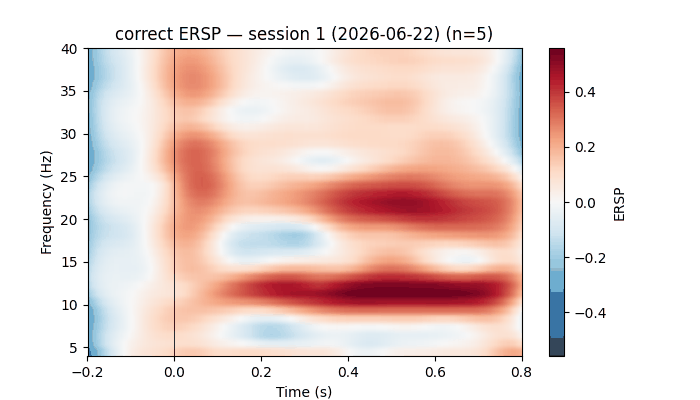
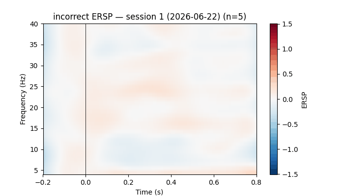
Next Steps
Currently in the process of wrapping up the analysis stages and finishing the implementation of linear mixed-effects regression and conversing with field experts on interpretting the preliminary findings before aiming for literature submission (journal selection pending).
Event-Related Potentials Analysis Pipeline
A Python pipeline for extracting event-related potentials (auditory and visual evoked potentials) from rodent EEG telemetry recordings. Robust and capable of analyzing historically noisy and current analog stim channels into clean event timestamps to epoch around those events. The pipeline is nearly finished and is currently contributing to multiple manuscripts currently in preparation at the lab.
The Problem
Our DSI PhysioTel telemetry system records an analog stim channel alongside the EEG, and the channel carries square wave signals marking when a stimulus was presented to the animal. In a clean recording this is fine: MNE's find_events picks up the rising edges and you have your event timestamps. Historically, the BNC-aux cable essental in our set up for pairing the tools faced a poor adapter for grounding the signal, producing AEP datasets with much noise contamination in the stim channel signal, resulting in find_events to miss real stims and pick up false events during the duration of the study.
How It Works
The pipeline does a two-pass detection on the stim channel. The first pass runs find_events with min_duration=0.002 to filter out the TTL starting ripple while keeping all real trials and excluding the noisy half-signals from the analog signal. Then, for prior lab data with noisy AEP stimulus channels, an amplitude-thresholded binarization rewrites the stim channel as clean square pulses (1 above threshold, 0 elsewhere) which gets injected directly back into the MNE raw object via raw._data[stim_idx]. A second find_events pass on the binarized channel produces the final event list.
A USE_BINARIZE flag lets you skip the rewrite for clean recordings where the raw analog channel is already usable and as a debug comparator/validation that the binarized stage doesn't influence the final data analysis.
Before any of that, each file is reduced to the EEG channel and the stim channel, with the stim channel retyped as MNE's stim type so its volt-scale swings are never judged against a µV amplitude threshold. Epochs then run from 100 ms before each event out to the paradigm's tmax, baseline corrected on the pre-stimulus window, and artifact rejected at 500 µV peak-to-peak (above expected electrophysiological range for mouse EEG). Every subject has two associated figures: an ERP image stacking all epochs above the evoked average, and the evoked waveform with a 95% inter-trial confidence band, both marked with dashed lines at stimulus onset.


The same pipeline handles auditory and visual evoked potentials, and a Tk front end switches between them. Picking a paradigm rewrites the expected stim channel name, sets the epoch length (1 s for AEP, 0.5 s for VEP), and swaps which advanced control is on screen (AEP has the ISI debug search range and VEP has the stim channel first/last detected flash-count removers for VEP [the equipment we used in lab had a noisy start and stop contribution in the stim channel we didn't want]). Component windows for P1, N1, and P2 are entered in milliseconds with a polarity each.
The AEP paradigm delivers two tones per trial (to measure and assess auditory sensory gating). define_target_events keeps only events that have a paired TTL pulse inside the ISI search window (0.3-0.7 s by default) and the measured lags are logged per subject as a median, standard deviation, and range. T2 components are then found by shifting each search window forward by that subject's median ISI and subtracting the offset back out, so the reported latency stays relative to T2's own onset. Workbook columns are prefixed T1_ and T2_, with the pair count and ISI spread carried alongside them - that jitter matters, since T2 is measured off a single per-subject median rather than per-trial lags.
VEP needs no pairing and epochs come straight off the event array, but the light gun emits startup and shutdown noise, so the first event and the last three are discarded.
Measuring the Components
The field's traditional measure is a windowed local peak. find_local_peak checks the found epochs to the evoked component windows and takes the most prominent local peak. Where no local peak exists at all, it falls back to the window extremum and records a no_local_peak value.
Group values are never peak-picked off the grand average, because the peak of the mean is not the mean of the peaks (since a simple average of all the subject trials in a grand mean waveform would discard much important phase-encoding dynamics of the dataset). Each component's group value is the across-subject mean of the per-subject peak measures; the grand average is still computed, but only for the figure.
On top of the classic peaks, the pipeline implements Steven Luck's recommended analysis of 50% fractional area/peak latency., which are far less biased by noise and trial count. Each component window yields:
- Mean amplitude - the plain mean voltage across the window and the 'amplitude' measure, since it doesn't chase the noisiest sample the way peak amplitude does
- Pre-window mean - the mean of the 10 ms immediately before the window, computed independently of window validity as a local drift and baseline check
- 50% fractional area latency - where cumulative rectified area reaches half the window total, linearly interpolated between samples
- 50% fractional peak latency - found by walking left from the peak until amplitude drops below half its value, a better onset estimate than the peak itself
- Peak latency - the conventional window extremum, kept for comparison
For every file, the pipeline writes:
- The total event count before and after binarization, so you can immediately see whether binarization changed the detected events
- The exact sample timestamps, event IDs, and stim channel values at the first few events in each pass, so you can spot-check whether the pulses look right
- How many events were dropped during
mne.Epochs()construction (these are events too close to the recording boundaries to fit a full epoch window) - How many epochs were dropped by the amplitude rejection threshold (currently 500 µV)
- The stim channel trace itself, before and after binarization, as a figure per file to debug and see comparison
- Long-format tables of every peak and windowed measure with its status flag attached, so each window can be traced back to the subject and component it came from


What This Gets You
Once the pipeline is run across a cohort, the outputs come together into an analyzable grand-mean evoked waveforms across animals, and direct comparisons between genotypes or experimental groups. Each run leaves per-subject ERP images and evoked figures, a grand-mean figure, and two workbooks - one for the classic peaks, one for the noise-robust measures and its windows sheet - each a row per subject with a bolded grand-mean row last.

What's Next
Finalize literature review and initial report on the potential that event related potential research possesses in the several rare neurodevelopmental disorders the Silverman Lab studies.
Homemade EEG and BCI
I am building a real-time brain-computer interface to detect motor imagery (imagined muscle clenching) from self-recorded EEG data to translate my EEG signals into keyboard commands in real time.
The github repository for this project can be found here.
Background & Motivation
Hobbyist BCI toolkits can be costly, so I opted to build my own EEG recording RC device for its lower entry cost and educational opportunity to hone circuit theory fundamentals.
Technical Implementation
The front end uses an AD620 medical-grade instrumentation amplifier computing the difference between two electrodes, with gain set by an external resistor. The signal then passes through a TL084CN op-amp filter chain: a 60 Hz notch, 7 Hz high-pass, 31 Hz low-pass, 1 Hz high-pass, a second gain stage, and a second 60 Hz notch. The resulting analog passband is roughly 7-31 Hz, targeting the mu and beta ranges where motor imagery desynchronization appears.
I built a single-channel cap with two electrodes, one active site and one mastoid reference, out of hot glue, electrical tape, and a ski mask.
Four Python modules form the software pipeline: real-time circular-buffer visualization, a PsychoPy task presenting pseudo-randomized CLENCH and REST cues with synchronized 3-second recordings at 80 trials per session, preprocessing that downsamples 48 kHz to 250 Hz with an 8-30 Hz bandpass, and a logistic regression classifier under stratified 5-fold cross-validation.


Results & Performance
The system runs end to end in real time: the decoder classifies incoming epochs and emits a keystroke on a left-fist imagery call. Classification is currently at chance (F1 = 0.512, stratified k-fold), so the keystroke is not yet reliably driven by the intended imagery.
Averaged across 80 trials, 60 Hz and its harmonics account for approximately 96% of total spectral power, while the entire 8-30 Hz band holds about 0.0085%. Comparing per-trial log band power between conditions gives no detectable difference: t(78) = -0.835, p = 0.41. The two condition-averaged spectra are visually indistinguishable across the band of interest.
Separately, this is a single-electrode setup. Motor imagery decoding depends on a spatial contrast between sensorimotor cortex and surrounding sites, and one channel provides nothing to contrast against. Posterior alpha occupies the same band at higher amplitude, so the discriminative signal is mixed into a larger one that no filtering on a single channel can separate.
To Do
an external USB interface to remove the suspect audio path, and additional AD620 stages for a three-electrode montage at C3, Cz, and C4 with a Laplacian on the center site. Modeling changes come after, since more training data and stronger classifiers cannot recover a signal the front end never captured. SVM once the input is trustworthy.
About
Welcome! I'm Sean, an M.S. student in biomedical engineering at Carnegie Mellon University with a concentration in artificial intelligence and biomedical engineering with a research interest in ML applications in neural decoding and brain-computer interfaces.
Previously, I earned my B.S. in Neurobiology, Physiology, and Behavior at UC Davis in 2024 and worked in the Silverman Translational Neuroscience Lab at UC Davis Health until 2026 where we studied mouse models of neurodevelopmental disorders and investigated electrophysiological signatures in EEG compared to observable and measurable animal behavioral phenotypes. My involvement there included experimental design, stereotaxic surgery and EEG implantation, in vivo and in vitro electrophysiology, Python analytical pipeline development, and manuscript preparation, though I was most commonly referred to as the 'computer wizard guy' from my colleagues.
As a passion project on the side, I built an EEG amplifier from individual RC components, wrote a PsychoPy task for myself to cue and timestamp motor imagery trials, and used it to collect my own dataset to train a logistic regression decoder evaluated with stratified k-fold cross-validation. More info in the Projects section.
Outside of work, it's easiest to find me at the mountains hiking/rock climbing, or at the beach. Unless I'm tired, in which case I'm usually at my computer.


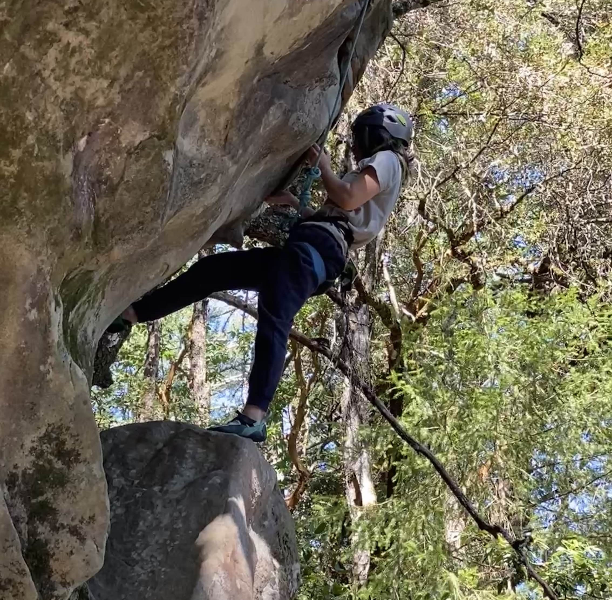
I also like hands-on creative hobbies like wood working and pewter casting. Here's some miscellaneous fun project's I've worked on over the past few years when time permits.
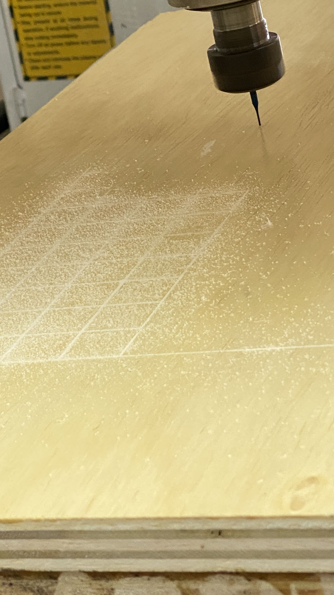
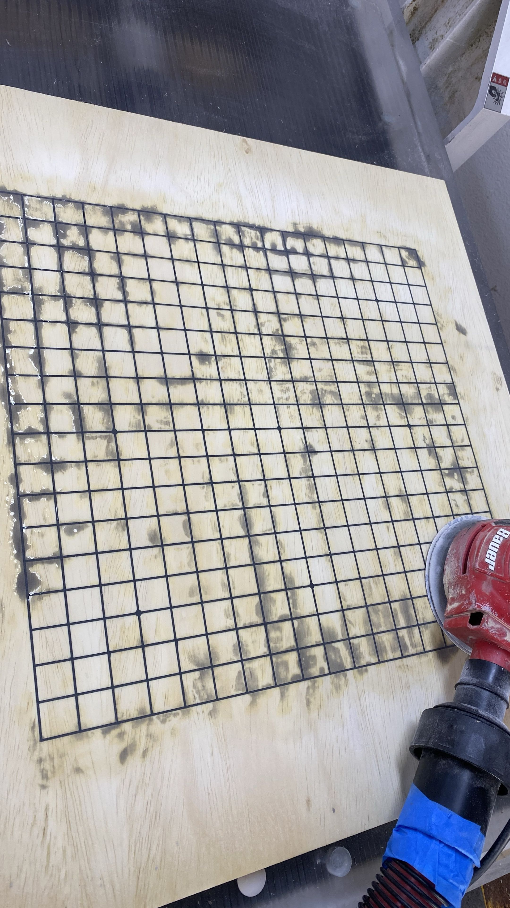
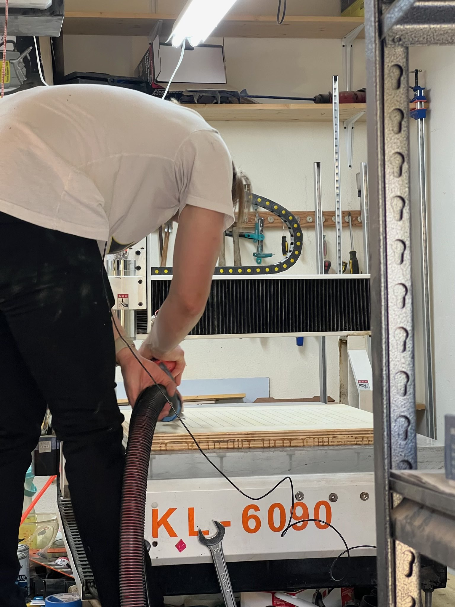
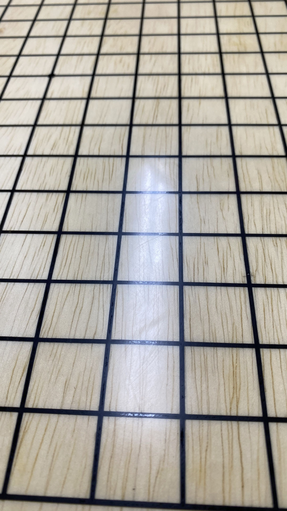
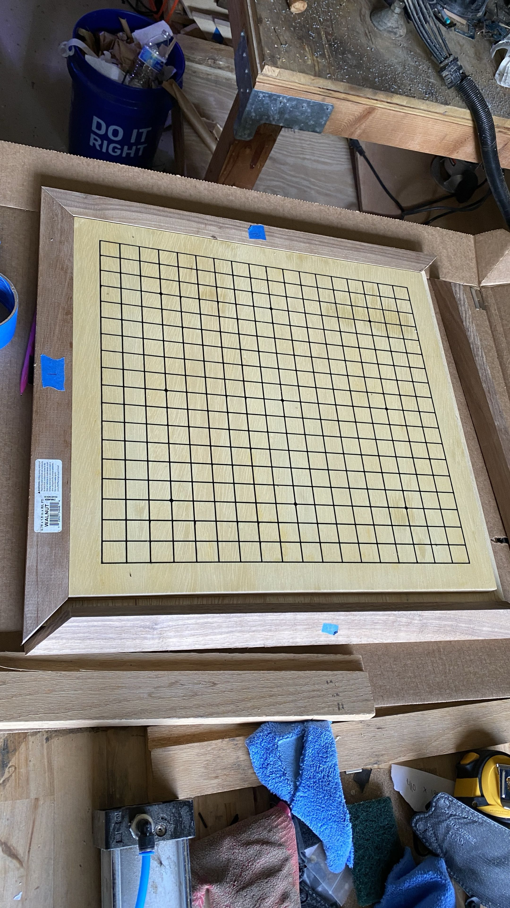
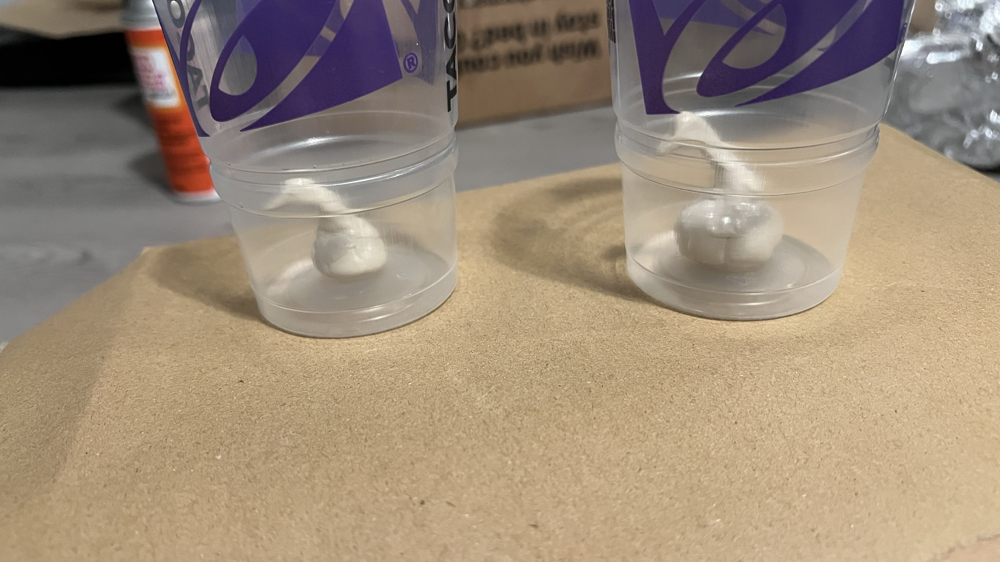
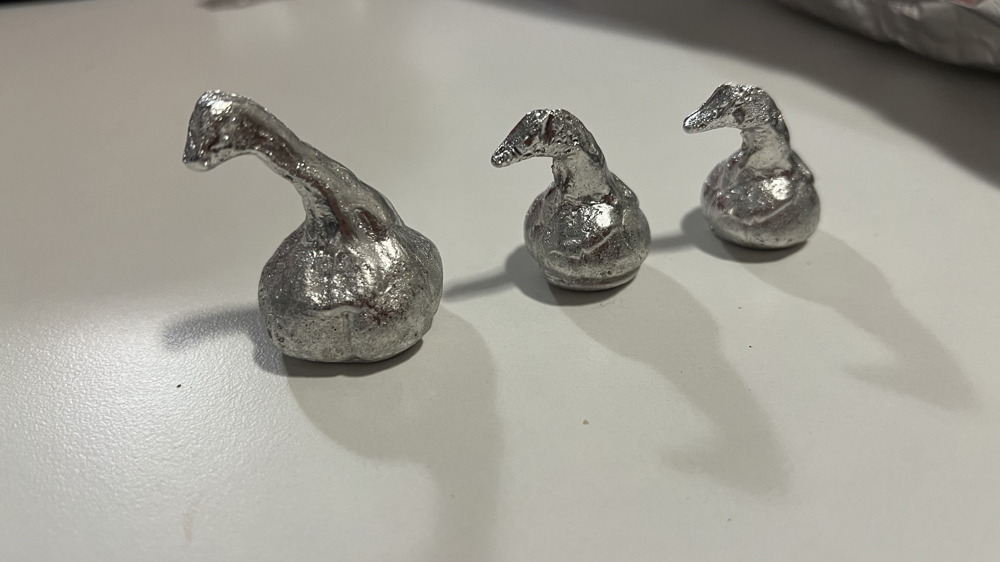
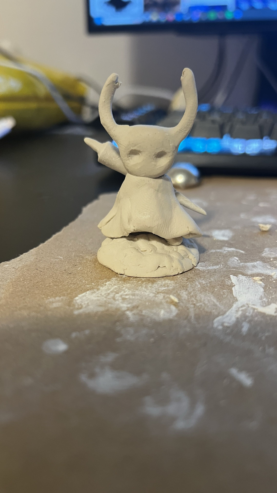
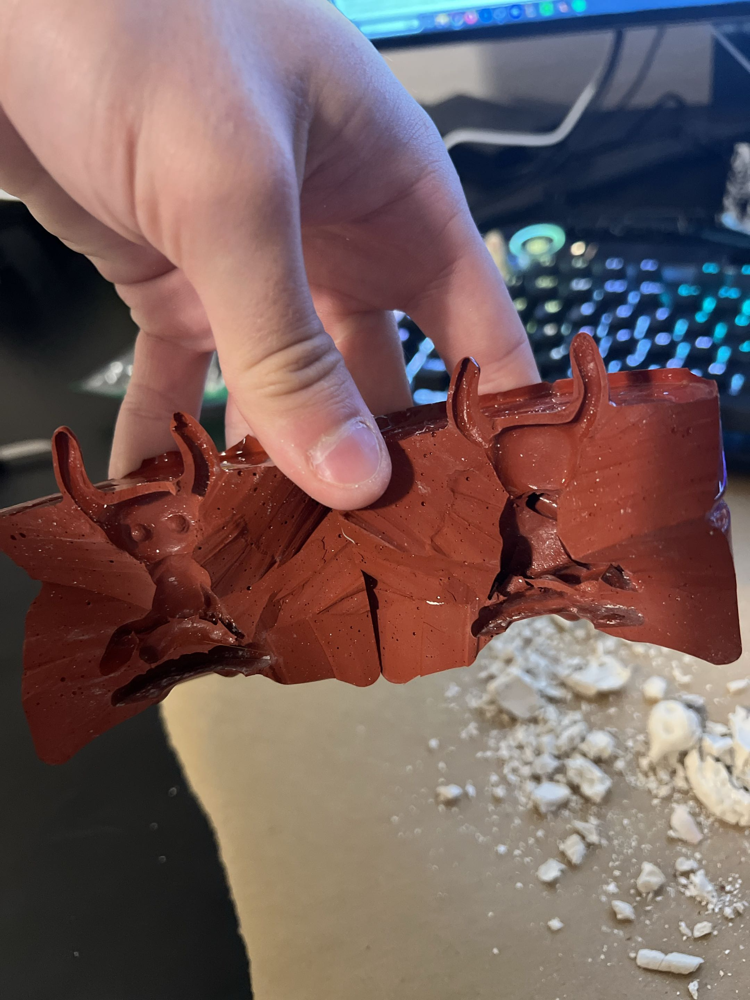
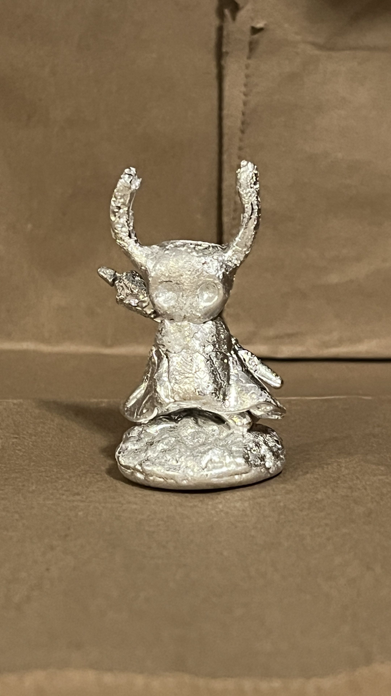
Publications
The following publications were drafted by my PI, Dr. Jill Silverman, and myself regarding projects I've been involved in at the lab. Many are in their mid to late stages of completion, and updates to this page will be regularly made.
Last updated: 8-14-2026
Novel Gain of Function Mouse Model of KCNT1-Related Epilepsy.
https://www.biorxiv.org/content/10.1101/2025.07.22.666003v2
Translational Outcomes in an Experimental Mouse Model with a Complete Loss of Shank3: Advancing Translation for Phelan McDermid Syndrome
Biorxiv and it's clinical companion paper will be available soon!